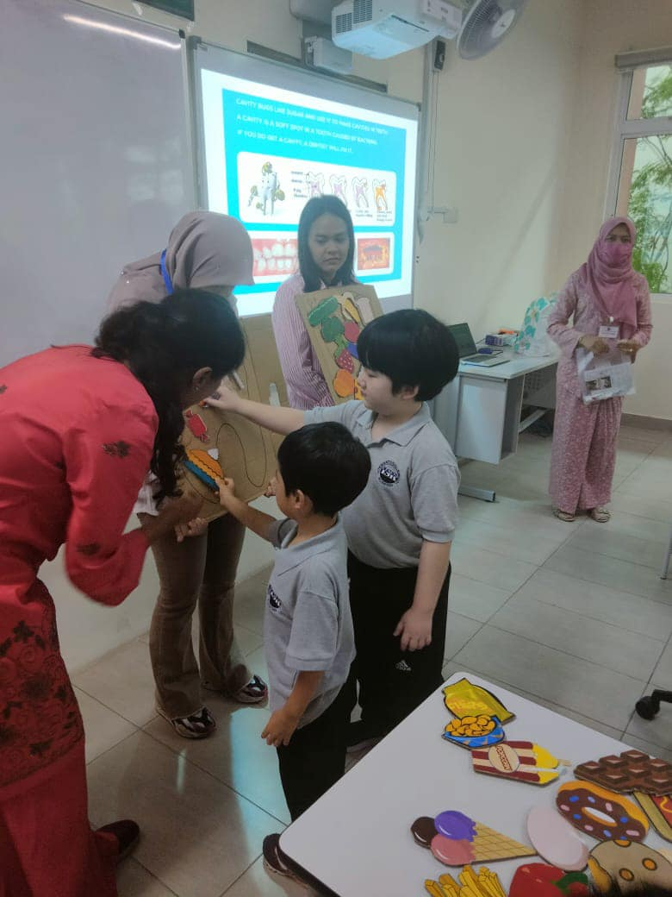

Stories, songs, speaking practice, listening habits, vocabulary, phonics exposure, and confident classroom communication.

Cute, Safe, Playful
Kindergarten turns first steps into joyful school confidence.
A bright early-years page for families who want warmth, care, playful exploration, social growth, and early English confidence.
- Age 5 to 6
- Joyful routines
- Early English confidence
Play, language, friendship, and brave little routines.
Kindergarten is designed as a welcoming bridge into school life. Children learn through movement, stories, songs, games, hands-on materials, classroom routines, guided social interaction, and expressive performance.
Every detail should reassure parents: children feel safe, seen, encouraged, and ready to belong.

Number sense, patterns, sorting, counting, comparisons, puzzles, and practical problem-solving through play.
Friendship, turn-taking, kindness, simple responsibility, emotional language, and safe classroom routines.
Art, music, movement, role play, storytelling, performance, and confidence in front of a friendly audience.
Children learn to care for themselves, ask for help, follow routines, and feel comfortable within the school community.
The experience should feel open, warm, and easy to understand for families entering ISK for the first time.